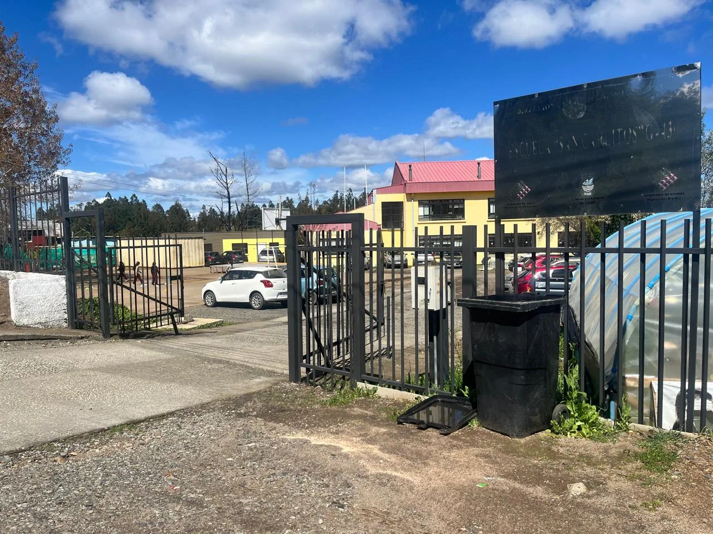
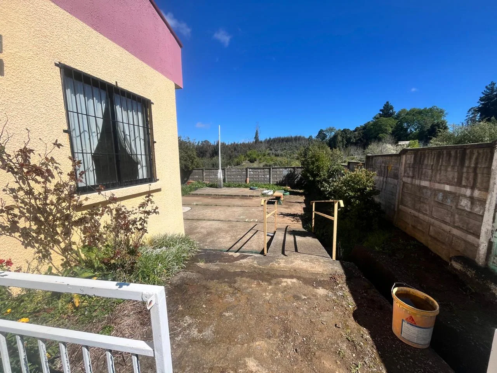

Escuela Básica San Carlitos · Tomé
Un lugar para aprender, crecer y descubrir talentos
Educación integral y oportunidades para crecer.
🎨 Talleres JECExperiencias de aprendizaje⚽ ExtraescolarArte, deporte y comunidad📰 NoticiasLo que está pasando📄 DocumentosInformación institucional
CONOCE NUESTRA HISTORIA
Nuestra escuela
Educación Parvularia a 8.º básico · Jornada Escolar Completa · RBD 4848-8
Conoce nuestro proyecto educativo →
PERSONAS QUE NOS ACOMPAÑAN
Equipo directivo
ACTUALIDAD
Noticias destacadas
APRENDER HACIENDO
Talleres JEC
Conoce nuestros talleres, sus objetivos, responsables y experiencias en imágenes.
MÁS ALLÁ DEL AULA
Actividades extracurriculares
NUESTRA IDENTIDAD
Un proyecto educativo con sentido
Misión
Visión
MOMENTOS QUE NOS UNEN
Nuestra comunidad en imágenes
EN MOVIMIENTO
Videos y experiencias
AGENDA ESCOLAR
Próximas actividades
FAMILIAS
Admisión y matrícula
Conoce nuestra comunidad educativa
Consultar por matrícula →
ESTAMOS PARA AYUDARTE